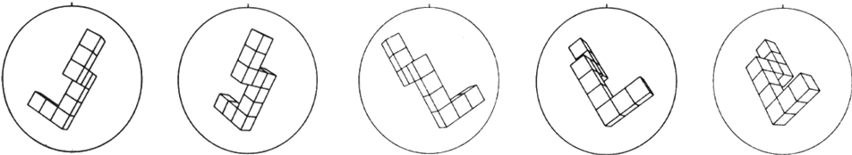
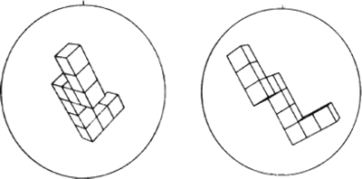

Instructions: Mental Rotation Task
This is a test of your ability to look at a drawing of a given object and find the same object within a set of dissimilar objects.The only difference between the original object and the chosen objects will be that they are presented at different angles.
An illustration of this principle is given below where the same single object is given in five different positions.
Look at each of them until you are satisfied that they are different angles of rotation of the same object.

Below are two drawings of new objects.
They do not match the above five drawings.
Please note that you may rotate these new objects, but they won't match the ones from above.
Look at each of them until you are satisfied that they are different from the above.

Now let’s do some sample problems.
For each problem there is a primary object on the far left.
You are to determine which TWO of four objects to the right are the same object given on the far left.
In each problem always two of the four drawings are the same object as the one on the left.
Click the boxes below the correct ones, and leave the incorrect ones blank.
The first sample problem is done for you. Click "Start Training" to go to the training page.
As you can see, answers 1 and 3 are a rotated version of the Primary object, while object 2 and 4 are mirrored, and therefore, incorrect.
 |  |  |  |  |